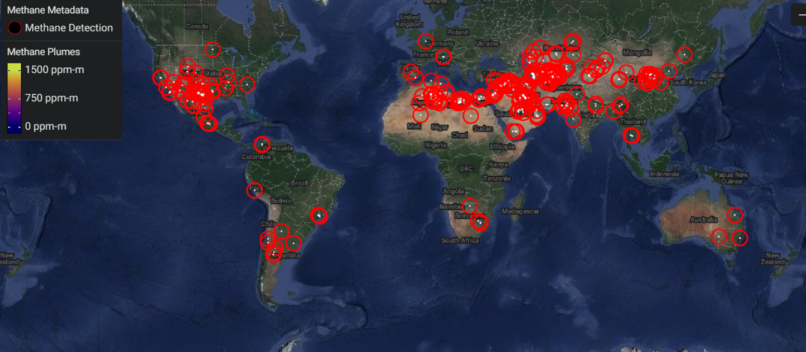

Utiliza GreenHaus para explorar datos relacionados con el clima de la NASA y otras agencias espaciales de todo el mundo, aprende cómo reducir tu huella de carbono, encuentra oportunidades de voluntariado relacionadas con el medio ambiente y aprende cómo abogar por el cambio ambiental de manera local.
Que es EMIT?La investigación de fuentes de polvo mineral de la superficie terrestre (EMIT) de la NASA es un sensor hiperespectral montado en la Estación Espacial Internacional (ISS), lanzado en julio de 2022. Escanea la Tierra utilizando luz infrarroja visible y de onda corta..

Como ayuda EMIT a los cientificos del clima? ¿Cómo ayuda EMIT a los científicos del clima? El polvo mineral en la atmósfera, originado en los desiertos globales y transportado por los vientos, es un elemento crucial del sistema terrestre. Estas partículas de polvo, compuestas de minerales claros y oscuros, tienen efectos contrastantes sobre la temperatura de la Tierra: los minerales oscuros la calientan, mientras que los claros la enfrían. El mapeo preciso de EMIT de las regiones productoras de polvo promete profundizar nuestra comprensión de cómo estas partículas impactan el sistema terrestre y las poblaciones humanas, tanto en el presente como en el futuro.

¿Qué más puede hacer EMIT? ¡Resulta que EMIT puede ayudar tambien a detectar fuentes de gases de efecto invernadero, incluidos dióxido de carbono y metano. La NASA ya ha puesto a disposición los datos de emisiones de metano de EMIT (consulta la pestaña de Datos para obtener más información) y planea hacer lo mismo con los datos de dióxido de carbono muy pronto. El siguiente mapa muestra el historial completo de fuentes puntuales de metano de EMIT.
Algunas agencias espaciales alrededor del mundo recopilan y comparten datos que contribuyen a la ciencia abierta y mejoran nuestra comprensión del clima de la Tierra. Sólo algunos ejemplos incluyen: